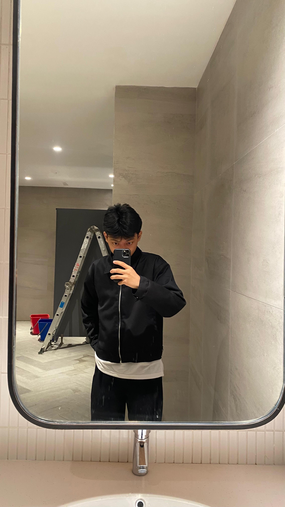

Jovani Aditia Pratama
Improvement Manufacture & Problem Solving
Halo! Saya Jovani Aditia Pratama adalah seorang mahasiswa Informatika yang bersemangat dalam membangun aplikasi web yang interaktif, responsif, dan mudah digunakan. Senang mempelajari teknologi baru dan berkolaborasi dalam proyek kreatif.
Tentang Saya
Saya memiliki latar belakang di bidang ilmu komputer dengan fokus pada pengembangan front-end. Selain coding, saya juga aktif dalam organisasi kampus dan sering mengikuti kompetisi hackathon untuk mengasah kemampuan pemecahan masalah.
Pendidikan
Politeknik Batam
D4 Rekayasa Keamanan Siber (2025 - Sekarang)
Keahlian Teknis
Berikut adalah beberapa teknologi dan tools yang biasa saya gunakan dalam pengembangan perangkat lunak:
HTML5
CSS3
JavaScript
Bootstrap
Git & GitHub
Figma